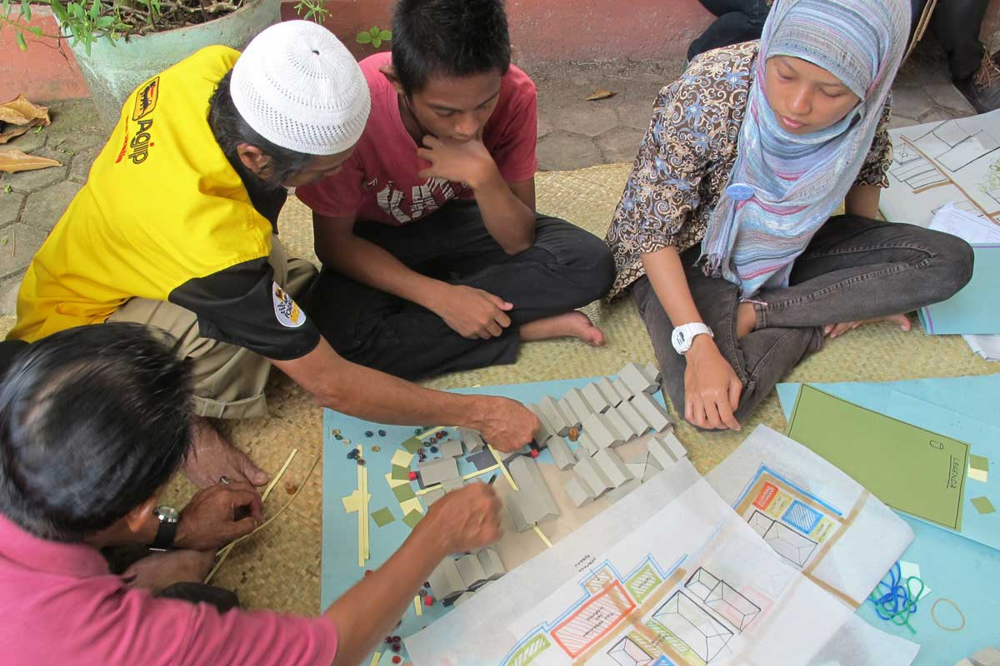

Firm Foundation
Banjarmasin, South Kalimantan, Indonesia
Most residents of Banjarmasin, an Indonesian city on the island of Borneo, live in dense housing built on stilts over the city’s waterways and wetlands, and battle daily with flooding, polluted rivers and rising tides. A group of residents worked with the Kota Kita team through workshops and a participatory design process to create and build a new low-cost public space, Firm Foundation, providing much needed stability for waterfront activities, infrastructure for public health, and fortification of river ecology.
In Banjarmasin, life is largely lived by the water. Economic and social activities take place on the river’s banks, but contamination and ecological damage caused by rapid urbanization has left many households without utilities and basic infrastructure. The Kota Kita team organized a series of participatory workshops in which residents first learned about water issues and the complexities of the built environment, and then, in a design competition, proposed ideas for improving their neighborhood. The residents behind the winning proposal, a waterfront public space, developed a design in partnership with the local Banjarmasin government and the support of AECOM’s UrbanSOS program.
Firm Foundation is built over the water with a flexible kit of parts of gabion foundations, a simple and resilient structural system that community members can assemble themselves without heavy machinery. The design takes cues from Indonesian architecture, using subtle floor level changes to differentiate spaces, to preserve the cultural identity and livelihood of the neighborhood while providing a gateway to the area from the water.
In addition to providing an enhanced public space in a neighborhood where such spaces are rare, Firm Foundation supports informal economic activities, a reconstructed boardwalk, a graywater vegetative filtration system, a reestablished port for intermodal transport connections and structural support for adjacent structures.
The project has become a model for Banjarmasin city government and a catalyst for future investments in basic services, showing that even modest investments in the public realm can help address pervasive and entrenched issues related to livelihoods and water.
To really connect with people and their uses of public spaces, Kota Kota used storyboards, illustrations and had residents tell us about the activities and uses of spaces in their daily lives. The process of telling stories was what captivated people, got them to listen to one another, helped them communicate their needs and also enabled them to come up with highly creative and innovative solutions themselves.
This storytelling tool featured in a guidebook drawn up by the team, the Social Design Field Guide, which enables other communities to come together and build similar communcal spaces. In the book, the team illustrates nine design tools and methods applied in the Firm Foundation project. It explains the steps for running participatory design workshops with community stakeholders, especially in areas where participation in city development is new or limited.


